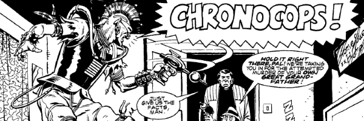

An anthology series featuring paradoxical calamaties, and the launching pad for D.R. & Quinch.
Art by Dave Gibbons
| Story Title | Parts | Pages | w indicates a wraparound coverCovers | Year(s) | Issues | Writer | Artist | Colourist | Letterer |
|---|---|---|---|---|---|---|---|---|---|
| [William the Conkerer] | 1 | 3 | 0 | 1982 | 294 | Alan Grant | Eric Bradbury | [b&w] | Tim Skomski |
| Ultimate Video | 1 | 4 | 0 | 1982 | 295 | Roy Preston | Jose Casanovas | [b&w] | Jack Potter |
| [The Star] | 1 | 4 | 0 | 1983 | Reprints: X11297 | Chris Lowder | Massimo Belardinelli | [b&w] | Peter Knight |
| [Family Trees] | 1 | 5 | 0 | 1983 | 298 | Alan Hebden | John Higgins | [b&w] | Peter Knight |
| This Is Your Death | 1 | 5 | 0 | 1983 | 300 | Chris Lowder | Mike Dorey | [b&w] | Peter Knight |
| Revenge of the Guinea-Pig | 1 | 4 | 0 | 1983 | 301 | Alan Hebden | Kim Raymond | [b&w] | Peter Knight |
| Dr. Dale's Diary | 1 | 5 | 0 | 1983 | Reprints: 2KA'89302 | Alan Grant | Boluda | [b&w] | Peter Knight |
| [Shakespeare] | 1 | 5 | Eric Bradbury 1 | 1983 | 303 | Chris Lowder | Eric Bradbury | [b&w] | Peter Knight |
| The 200 Years War | 1 | 4 | 0 | 1983 | 305 | Chris Lowder | Mike White | [b&w] | Peter Knight |
| The Perfect Crime | 1 | 5 | 0 | 1983 | 306 | Chris Lowder | Massimo Belardinelli | [b&w] | Peter Knight |
| Rogan's Run | 1 | 6 | 0 | 1983 | 307 | Alan Grant | Massimo Belardinelli | [b&w] | Jack Potter |
| The Reversible Man | 1 | 4 | 0 | 1983 | 308 | Alan Moore | Mike White | [b&w] | Peter Knight |
| [Einstein] | 1 | 6 | 0 | 1983 | Reprints: 2KA'90309 | Alan Moore | John Higgins | [b&w] | Peter Knight |
| Chrono-Cops | 1 | 5 | 0 | 1983 | Reprints: M4.14310 | Alan Moore | Dave Gibbons | [b&w] | Dave Gibbons |
| [Joy Riders] | 1 | 5 | 0 | 1983 | 311 | Alan Hebden | Jesus Redondo | [b&w] | Steve Potter |
| The Avenging Kong Meets Laurel and Hardy | 1 | 6 | 0 | 1983 | 313 | Alan Grant | Mike White | [b&w] | Peter Knight |
| The Big Clock | 1 | 5 | 0 | 1983 | Reprints: 590315 | Alan Moore | Eric Bradbury | [b&w] | Peter Knight |
| T.C. Spudd's First Case | 1 | 4 | 0 | 1983 | 316 | Alan Grant | Jim Eldridge | [b&w] | Tony Jacob |
Linked to D.R. And QuinchD.R. and Quinch Have Fun On Earth | 1 | 6 | 0 | 1983 | Reprints: M4.01317 | Alan Moore | Alan Davis | [b&w] | Steve Potter |
| Going Native | 1 | 4 | 0 | 1983 | 318 | Alan Moore | Mike White | [b&w] | Peter Knight |
| The Impossible Murder | 1 | 5 | 0 | 1983 | Reprints: M322 (supplement)319 | Chris Lowder | Carlos Ezquerra | [b&w] | Peter Knight |
| Ring Road | 1 | 5 | 0 | 1983 | 320 | Alan Moore | Jesus Redondo | [b&w] | Steve Potter |
| I Could Do That | 1 | 5 | 0 | 1983 | 321 | Alan Grant | Mike White | [b&w] | Peter Knight |
| The Time Machine | 1 | 5 | 0 | 1983 | 324 | Alan Moore | Jesus Redondo | [b&w] | Peter Knight |
| The Visitation | 1 | 4 | 0 | 1983 | 326 | Chris Lowder | Eric Bradbury | [b&w] | Peter Knight |
| The Startling Success of Sideways Scuttleton | 1 | 5 | 0 | 1983 | 327 | Alan Moore | John Higgins | [b&w] | Jack Potter |
Full title: The Absolutely and Utterly Authentic Story Behind "The Hitler Diaries"...."The Hitler Diaries" | 1 | 6 | 0 | 1983 | 328 | Chris Lowder | Mike White | [b&w] | Peter Knight |
Linked to Infinity IncKismet | 1 | 3.5 | 0 | 1983 | 333 | Chris Lowder | Robin Smith | [b&w] | Tom Frame |
| Que Sera, Sera | 1 | 2 | 0 | 1983 | 346 | Alan Grant | Robin Smith | [b&w] | Tom Frame |
| [Jogging] | 1 | 4 | 0 | 1983 | 348 | Alan Grant | Geoff Senior | [b&w] | Peter Knight |
| The Long Haul | 1 | 5 | 0 | 1984 | 360 | Chris Lowder | Massimo Belardinelli | [b&w] | Peter Knight |
| [Running Out of Time] | 1 | 6 | 0 | 1984 | 362 | Chris Lowder | Jesus Redondo | [b&w] | unknown |
| [The Contract] | 1 | 5 | 0 | 1984 | 374 | Chris Lowder | Massimo Belardinelli | [b&w] | Clive McGee |
| Time and Time Again | 1 | 4 | 0 | 1988 | 599 | Nicholas Barber | Kevin Walker | [b&w] | Bambos |
| Wraggs to Riches | 1 | 3 | 0 | 1991 | 722 | Lawrence Miles | Richard Elson | <-- | Steve Potter |
From Tharg's Future ShocksBlink of an Eye (a Time Twister) | 1 | 3 | 0 | 1991 | Reprints: M342 (supplement)748 | Mark Eyles | Carl Critchlow | <-- | Annie Parkhouse |
| I Shot JFK | 1 | 4 | 0 | 1994 | 2KYB'95 | Iain Simmons | Dave D'Antiquis | [b&w] | Caroline Steeden |
| Back to the Fuhrer | 1 | 5 | 0 | 2007 | 1566 | Michael Carroll | Gary Erskine | [b&w] | Ellie de Ville |
| Chrono-Cabbie | 1 | 5 | 0 | 2010 | 1678 | Alec Worley | Neil Roberts | <-- | Annie Parkhouse |
| The Time Crystal | 1 | 4 | 0 | 2011 | 1724 | T.C. Eglington | Nick Dyer | [b&w] | Annie Parkhouse |
| Contractions | 1 | 4 | 0 | 2012 | Reprints: M386 (supplement)1782 | T.C. Eglington | Lee Carter | <-- | Simon Bowland |
| The Stitch | 1 | 5 | 0 | 2012 | 1783 | Simon Spurrier | Simon Gurr | [b&w] | Simon Bowland |
| Burping Hitler | 1 | 4 | 0 | 2014 | 1887 | Rob Williams | Simon Gurr | [b&w] | Ellie de Ville |
| The Timeless Assassin | 1 | 4 | 0 | 2016 | 1982 | Rory McConville | Steven Austin | [b&w] | Ellie de Ville |
| Time Hygiene | 1 | 8 | 0 | 2020 | 2212 | T.C. Eglington | Warren Pleece | <-- / [b&w] | Simon Bowland |
| year | episodes | pages |
| 1980 | 0 | 0 |
| 1981 | 0 | 0 |
| 1982 | 2 | 7 |
| 1983 | 28 | 132.5 |
| 1984 | 3 | 16 |
| 1985 | 0 | 0 |
| 1986 | 0 | 0 |
| 1987 | 0 | 0 |
| 1988 | 1 | 4 |
| 1989 | 0 | 0 |
| 1990 | 0 | 0 |
| 1991 | 2 | 6 |
| 1992 | 0 | 0 |
| 1993 | 0 | 0 |
| 1994 | 1 | 4 |
| 1995 | 0 | 0 |
| 1996 | 0 | 0 |
| 1997 | 0 | 0 |
| 1998 | 0 | 0 |
| 1999 | 0 | 0 |
| 2000 | 0 | 0 |
| 2001 | 0 | 0 |
| 2002 | 0 | 0 |
| 2003 | 0 | 0 |
| 2004 | 0 | 0 |
| 2005 | 0 | 0 |
| 2006 | 0 | 0 |
| 2007 | 1 | 5 |
| 2008 | 0 | 0 |
| 2009 | 0 | 0 |
| 2010 | 1 | 5 |
| 2011 | 1 | 4 |
| 2012 | 2 | 9 |
| 2013 | 0 | 0 |
| 2014 | 1 | 4 |
| 2015 | 0 | 0 |
| 2016 | 1 | 4 |
| 2017 | 0 | 0 |
| 2018 | 0 | 0 |
| 2019 | 0 | 0 |
| 2020 | 1 | 8 |
| 2021 | 0 | 0 |